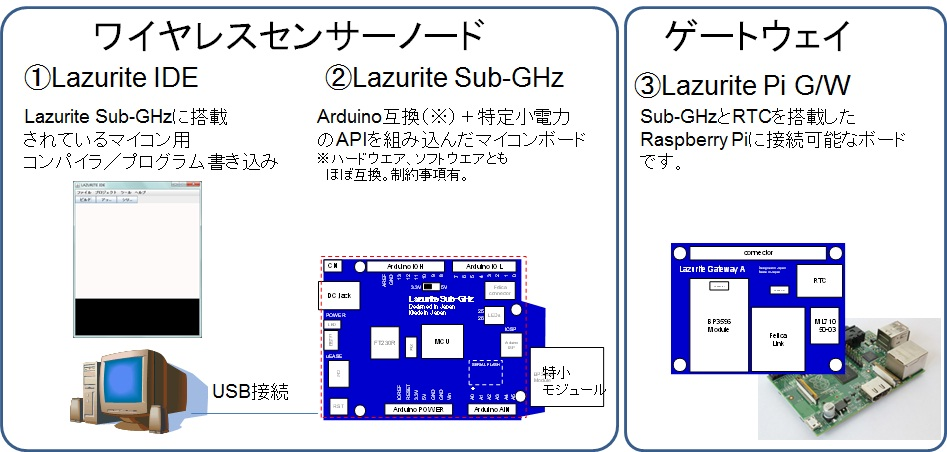
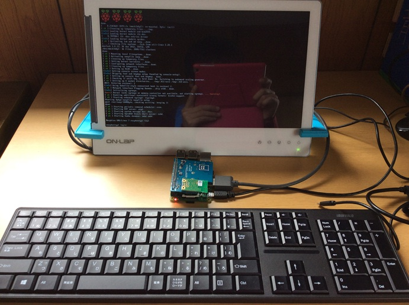

LazuriteはIoTを簡単に実現することができる開発キット／リファレンスデザインです。
回路はオープンハードウエア、ソフトウエアもオープンソースで開発しています。
Lazurite IDE、Rasberry Pi用の無線モジュールドライバソフトの双方ともGPLまたはLGPLのライセンスに基づき配布しています。

Lazuriteのダウンロードサイトよりインストーラーをダウンロードしてください。
インストーラーのファイル名は、setup_001001_2015Jun15.exe です。
Lazurite
Sub-GHz用のファームウエアである、LazuriteIDE\hardware、LazuriteIDE\librariesは、マイコン用のファームウエアです。マイコン用のファームウエハは、LGPL(Lesser
GPL)に基づき配布しています。
LazuriteIDE\BINのフォルダ内のファイルは、それぞれのソフトウエアのライセンスに基づき再配布しています。
Lazurite SubGHz 回路図
Lazurite Pi Gateway 回路図
Lazurite Pi Gatwayを使用するためには、次のものを揃える必要があります。
これは弊社の開発環境です。

1. Lazurite Pi Gatewayを使用する環境を立ち上げる
2. API reference
2-1. Ruby , Python, C言語 共有ライブラリ, JAVA
2. Lazurite Sub-GHz 技適取得済 外付けアンテナリスト